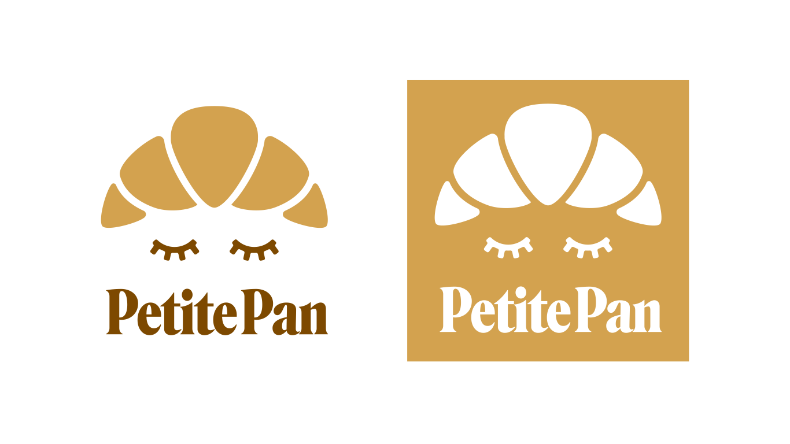
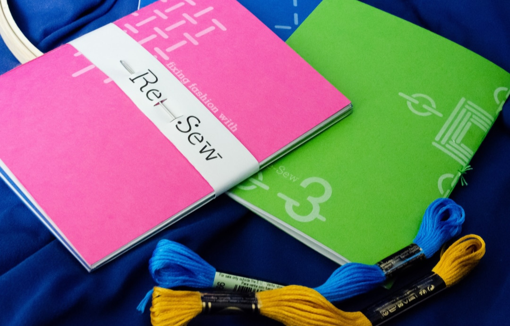
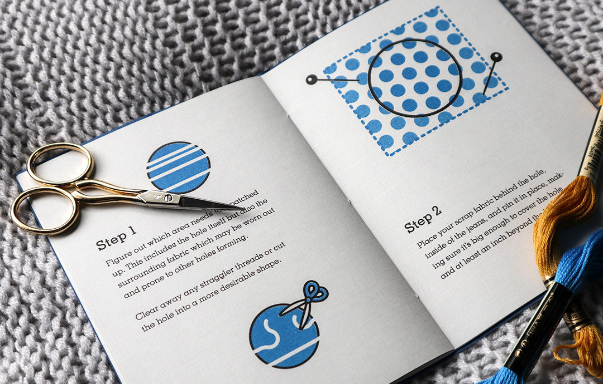

Outtakes
Here lies small personal projects, experiments and work that was rejected or reworked into later projects. Parts of older student work is displayed here as well. This collection includes motion graphics, logos, poster design, book design, and some bits from branding systems.





